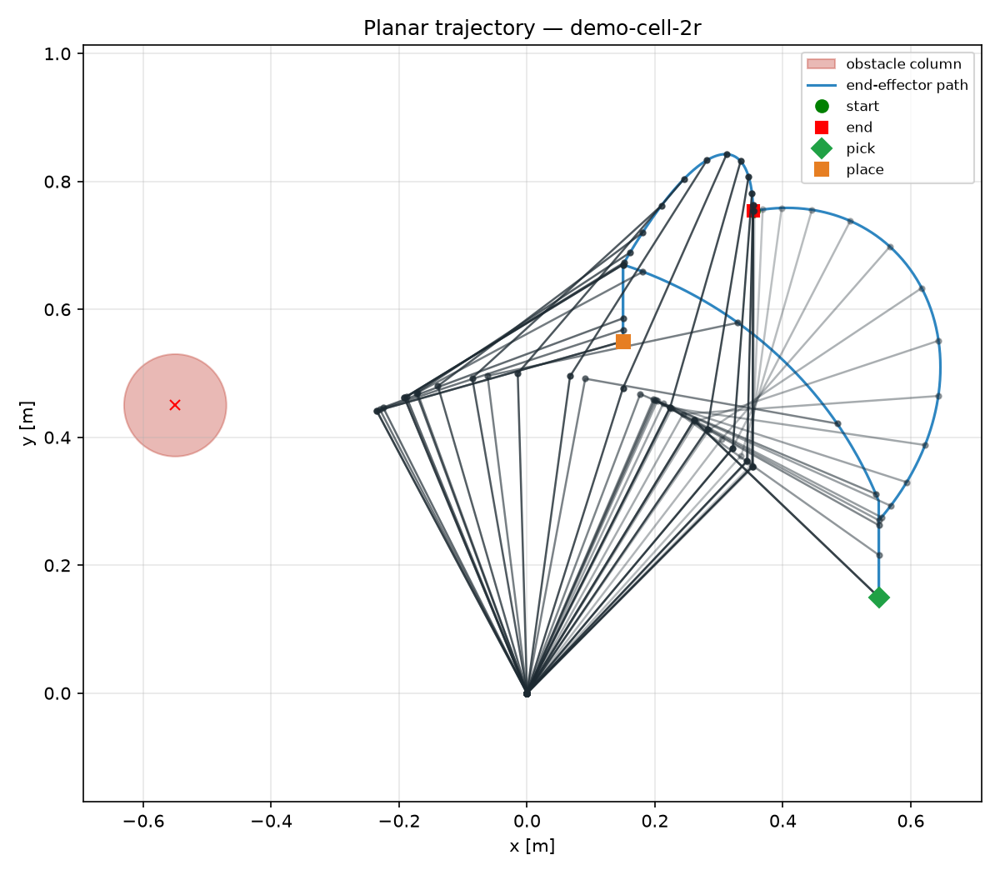
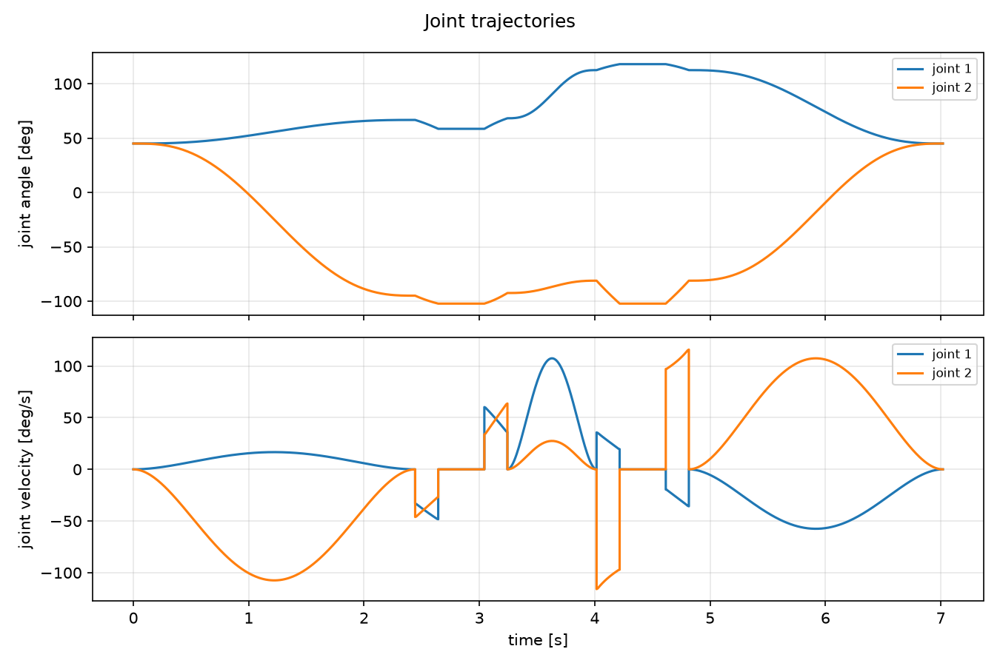

Planar 2R arm: pick a part from the conveyor and place it on pallet slot 0.
| Scenario | pick-place-2r-conveyor-to-pallet |
|---|---|
| Workcell | demo-cell-2r |
| Success | YES |
| Cycle time | 7.02 s |
| Total joint travel | 8.712 rad |
| Max joint speed | 2.022 rad/s |
| Min collision clearance | 0.2052 m |
| Samples | 713 |
| Pick | 0.550, 0.150, 0.000 m |
| Place | 0.150, 0.550, 0.000 m |
| Phase | Duration [s] | Gripper | Cartesian | Travel [rad] | Max speed [rad/s] | Min clearance [m] |
|---|---|---|---|---|---|---|
| move_to_pick_approach | 2.443 | open | no | 2.822 | 1.875 | 0.5731 |
| descend_to_pick | 0.200 | open | yes | 0.270 | 0.843 | 0.5731 |
| grasp | 0.400 | closed | no | 0.000 | 0.000 | 0.594 |
| lift_from_pick | 0.200 | closed | yes | 0.340 | 1.112 | 0.5676 |
| transit_to_place_approach | 0.773 | closed | no | 0.971 | 1.875 | 0.2486 |
| descend_to_place | 0.200 | closed | yes | 0.464 | 2.022 | 0.2052 |
| release | 0.400 | open | no | 0.000 | 0.000 | 0.2052 |
| retreat_from_place | 0.200 | open | yes | 0.464 | 2.022 | 0.2052 |
| return_home | 2.202 | open | no | 3.381 | 1.875 | 0.2486 |


Generated by robot-arm-workcell-sim.